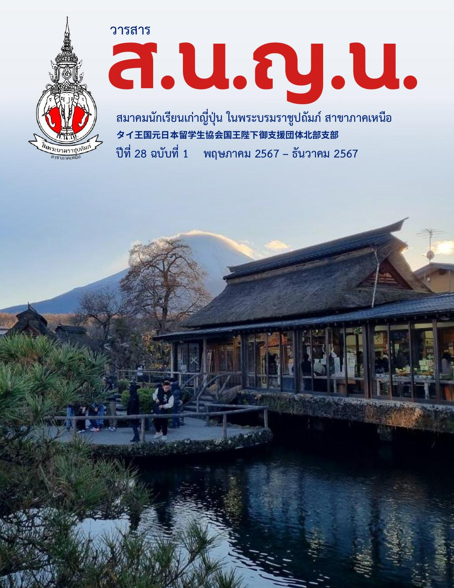

วารสารสมาชิกสัมพันธ์
วารสาร ส.น.ญ.น. ปีที่ 29 ฉบับที่ 2 พฤศจิกายน 2568 – เมษายน 2569
เรื่องราว ข่าวสาร และสายสัมพันธ์ของสมาชิกสมาคม
เปิดอ่านวารสาร ↗ดาวน์โหลด PDF ↓อ่านแบบพลิกหน้าบน Heyzine ↗บันทึกเรื่องราว ความทรงจำ และความเคลื่อนไหวของชุมชนเรา
เรื่องราว ข่าวสาร และสายสัมพันธ์ของสมาชิกสมาคม
เปิดอ่านวารสาร ↗ดาวน์โหลด PDF ↓อ่านแบบพลิกหน้าบน Heyzine ↗เรื่องราว ข่าวสาร และสายสัมพันธ์ของสมาชิกสมาคม
เปิดอ่านวารสาร ↗ดาวน์โหลด PDF ↓อ่านแบบพลิกหน้าบน Heyzine ↗เรื่องราว ข่าวสาร และสายสัมพันธ์ของสมาชิกสมาคม
เปิดอ่านวารสาร ↗ดาวน์โหลด PDF ↓อ่านแบบพลิกหน้าบน Heyzine ↗
เรื่องราว ข่าวสาร และสายสัมพันธ์ของสมาชิกสมาคม
เปิดอ่านวารสาร ↗ดาวน์โหลด PDF ↓อ่านแบบพลิกหน้าบน Heyzine ↗สอบถามเรื่องสมาชิก กิจกรรม การสอบ และการเรียนภาษาญี่ปุ่น